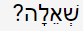
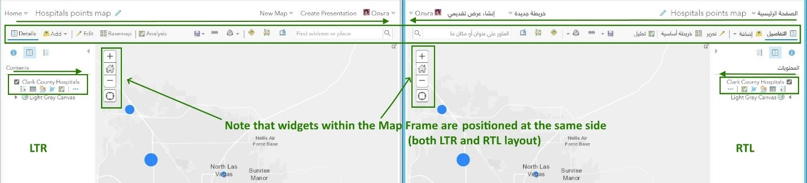

How to - test Arabic and Hebrew
Characteristics of Arabic or Hebrew (compared to other languages)
Middle Eastern languages such as Hebrew and Arabic are written predominantly right-to-left (RTL). Consequently, user interfaces require a different layout than those targeted at left-to-right (LTR) reading audiences. The direction of writing influences how information should be placed on the screen.
The main flow of the page goes in RTL direction, in other words, mirrored relative to English. The script may contain numbers and Latin words that are still written LTR. Most of the icons are not mirrored (there are some special cases that will be discussed later), but they should be listed in RTL order.
For more details about the bidirectional (BiDi) nature of Arabic and Hebrew, see Why these languages are called bidirectional.
Setting up the test environment
Test environment for ArcGIS Enterprise
How to change language and region on mobile devices
How to change language in web browsers
How to deploy Windows Virtual Machines
General recommendations
Regardless of whether you can read the language you are testing, it is always a good practice to open English and non-English UI side by side to be able to compare UI and quickly locate a necessary tool or command. It may be two virtual machine (VM) windows or two web-browser windows positioned side by side. Another helpful trick for languages you can’t read is to use the Google Translate app by pointing your smartphone’s camera at text to translate it.
| Platform | Locale source | Where to test |
|---|---|---|
| ArcGIS Pro, ArcGIS Desktop and other desktop apps | OS and MUI* | AR VM for AR EN VM for HE |
| Web applications | User profile and browser | Your browser with “display pages ” set to AR or HE (downloading and installing pure localized browser to test is preferrable) |
| Web applications in mobile mode | User profile and OS | Dev mode of your desktop browser is okay, but a physical device is preferable |
| Mobile apps | OS | Physical device or emulator |
* The Multilingual User Interface, related to the MUI file format, is a technology developed by Microsoft for the Windows system, MS Office and other software, which allows the installation of multiple interface languages.
See Language packs for Windows on the Microsoft support site to learn how to install a language pack (LP) for Windows DT. These instructions do not include Windows Server.
For Windows Server, browse to \\esri.com\software\OS\Microsoft\WindowsServer and download the .iso file containing the language that you want. Unpack the .iso file and save it in a folder on the C drive. Then open a command prompt and run the command "lpksetup.exe."
Follow the prompts in the GUI that appears.
Testing on ArcGIS Pro and Desktop
For ArcGIS Pro and Desktop, install Hebrew and Arabic LPs for Desktop products. Test Arabic using VMs that should be either deployed by a tester or connect to an Arabic VM from the public inventory to test with it. In case VMs resources are exhausted, MUI can be applied for testing.
Hebrew testing can be done using English OS, but you must set the user and system locale to Hebrew.
It is recommended that you open one window of a VM with an Arabic or Hebrew version of the product you are testing and compare it side by side with an English version opened on your desktop or another VM.
To get a VM, see https://ecsprd.esri.com/.
Testing web apps
To test web apps, you don’t need to run a Hebrew or Arabic VM. If needed, you can test in English VM on your regular machine. It is recommended that you open English UI in one browser window or tab and Arabic or Hebrew UI in another browser window or tab. Positioning windows with two different languages side by side allows you to compare UI and quickly locate what you need to test. While you can set the browser language independently from Windows OS, the Safari browser depends on the Mac OS language, so you must change the OS language if you need to test in Safari.
Some web applications, such as Map Viewer, support a locale property where you can switch the language for testing. For instance, adding ‘&locale=ar’ at the end of the URL will change the page language to Arabic, but it only works if you stay on that page.
Testing web applications in mobile mode
If physical mobile devices are not available, some UI mobile testing can also be performed with developer mode or just smaller window size in desktop browsers, but it is highly recommended that you use physical devices.
Mobile apps usually rely on the OS language. That means that to test a mobile app with Arabic or Hebrew language, you need to change your device language and region.
Pseudo versus real translations
For testing for UI elements, like layout direction, buttons, icons, tools order, and to find hard-coded strings, you don't need to wait for real translation; pseudo translations are fine. To check for other UI issues like truncation, overlapping, text justification, word wrap, and so on,, you must wait for real translations, because the mixed nature of English and localized characters in pseudo translation may produce false alarms.
English source string:
word 1). word 2). word 3).
Main differences between Hebrew and Arabic
The following details the main differences between the two languages.
Numerals
Hebrew uses Western numerals in UI and technical literature.
Some locales of Arabic language (AR-Egypt) may use Indic numerals instead of Western numerals. In web apps, all numerals are expected to be Western. Desktop and mobile apps may use Indic numerals from the operational system. To learn more, see Numerals and math.
It is a good practice to allow users to choose the numeral systems to use.
Sometimes you can see a mixture of Western and Indic numbers within a panel or an input box, but it is a bug. Numbers should be consistent.
Percent sign
The percent sign position is left of the number (%100) in Arabic, and right of the number (100%) in Hebrew. For Indic numerals, a special character for the percent symbol may be used (٪١٠٠).
Note: In the Turkish language, the percent sign also goes to the left (%100).Question mark
In Hebrew, the question mark is the same as in English, just located to the left:

In Arabic, the question mark is not only located to the left, but the symbol itself is flipped:
Mirroring versus bidirectional
It is incorrect to think that because Arabic and Hebrew are right-to-left languages, all UI should be the same as in English, just mirrored. Actually, those languages are bidirectional, and testers must be aware of what to mirror and what not to mirror.
Formulas, equations, measurements, scientific notations, URLs, programming and scripting languages, and SQL queries stay in LTR.
| Mirror |
|---|
|
| Do NOT mirror |
|
*In external documentation, you may find recommendations to flip some of them. It is recommended to keep them LTR because of technical limitations and for consistency reasons.
Handling bidirectional languages UI checklist
Text display in Arabic and Hebrew
Both Hebrew and Arabic alphabets have 24 characters. Some characters should be written differently depending on their position in the word (beginning, middle, end and stand-alone). If Arabic text is displayed as disjoined characters, it is a bug.

Learn more about the Hebrew alphabet
Learn more about the Arabic alphabet
Numbers, English names, and citations within the RTL text are written in LTR direction within the text flow. Stand-alone English text may be right-aligned, in general going in a LTR direction. Punctuation is so-called weak characters, and they are placed at the end of the string on the left. In this example, the tester has wrapped part of a HE expression into the LTR tag to overwrite the browser default behavior that was incorrectly rearranging the string word order:

More detailed information about weak or neutral characters
URLs and file paths are always LTR.
Keep them LTR. They can be right-aligned.


Date formats—Numbers are written LTR, text flow is RTL
If, for instance, in the DOJO library, you have a date in dd/mm/yyyy format, the day goes first, followed by the month, with the year at the end. The result string is displayed like this : 2019/12/31. Sometimes browser may reorder it incorrectly, sticking the year to the day, something like this: 312019/12/. It is a bug.


Punctuation symbols
Punctuation symbols appear to the left and sometimes are mirrored.
The question mark and percent sign are discussed in the Main differences between Hebrew and Arabic section. This table summarizes how math symbols should display:
| LTR | RTL | |
|---|---|---|
| greater than 2 | >2 | 2< |
| less than 2 | <2 | 2> |
| minus 2 | -2 | 2- |
Sometimes English text with punctuation may look not very good in RTL layouts. There is no way to control the direction of user-defined text that may be typed in any language. For UI text coded by our developers, it is better to control the punctuation in Always English text like product names. If the developer is not sure how to do it, use LTR tags to prevent browsers from moving punctuation to inappropriate positions.
The following is an example of an issue with ArcGIS Notebook Python 3 Advanced (3.0) with parenthesis wrapped incorrectly in RTL layout.

Solutions:
Coordinates should follow BiDi rules, see examples below.
The XY coordinates are written as in English (X, Y), but from left to right (Y ,X).
The minus sign follows the settings of the operating system.
The latitude and longitude coordinates are written as longitude, latitude (opposite to English), but because of the general RTL text direction, longitude appears at the beginning of the string at the right side and latitude appears at the end of the string at the left side.
| English Direction | Example (English) | Arabic direction | Example (Arabic) |
|---|---|---|---|
| X, Y | -13,319,177.019, 4,345,163.550 | Y , X | 4,345,163.550 ,13,319,177.019- |
| Lat, Long | 36°19'22.94''N, 119°38'53.53''W | Lat ,Long | W°119'38''53.53 ,N °36'19''22.94 |
The X and Y coordinates are written in pairs (X, Y) in a mathematical format to represent the x- axis and y-axis. While cartographers write spherical coordinates in reverse order, latitude (Y) is first and then longitude (X). Coincidently, this is the correct reading direction for Arabic users, (Y, X) if you intend to use Y,X to represent that the same location in mathematical format.
Note: Not all countries use N/S/E/W notation similar to English. Abbreviations in native characters are widely used in Russia, Thailand, Japan, and many other countries with non-Latin alphabets. Often those abbreviations of hemispheres are followed by abbreviations for latitude and longitude, so more than one character is required for each coordinate notation. Countries where Arabic is used refer to the cardinal directions as Ash Shamaliyah (N), Al Gharbiyah (W), Ash Sharqiyah (E), and Al Janobiyah (S). Additionally, Al Wusta is used for the center. For instance, N is written in AR as ثوانی
Lists are right-aligned and have bullets or numbers at the right of the text.
Ordered lists and unordered lists should be right-aligned, with bullets or patches at the right side. The same is true for icons. For a numbered list icon, don't flip it; a special icon exists in Calcite UI Icons.


Ordered lists are not just mirrored. Numbers and letters in bullets should stay the same.

Menus, pop-ups, and drop-down menus should respect RTL direction.
Toolbars should respect RTL direction.
Dialog layouts should be flipped, but there are some exclusions.
The order of most UI elements should go in RTL direction in AR and HE UI. Dialog boxes should be flipped.
While tools within their panels are following their LTR or RTL order, there is an exclusion. Widgets within the map frame are always positioned the same, no matter RTL or LTR.
Icons and graphics remain LTR unless they contain directional meaning.
Undo and redo icons don't flip, but they switch their functionality.
Don't mirror checkmarks icons
Graphs, histograms, charts, and reports are LTR*.
* Note: There may be situations when a graph should go in RTL direction with the Y axes at the right side even in English. For instance, a graph may contain some historical or chronological data. Add an option for users to flip graphs if needed. Usually graphs and charts going in the "wrong" direction are considered low severity issues, but it is recommended that you keep them LTR for consistency reasons.
Circular progress indicators derive their directionality from analog clocks and always turn in the clockwise direction.
Time scales and animations are LTR
Everything imitating physical devices, like MP3 and MP4 players, goes LTR. Note that text under the animation timescale in the following example is correctly written in RTL direction for Arabic (right), compared to English (left):

Map frames and map layouts are LTR
It is not recommended to flip the map frame and widget positions inside the map (Home, Zoom in, Zoom out, North Arrow, Scalebar, and so on). The app author must rearrange the widget positions if needed for the design purposes. See the following example:

The verbal scale text should go in RTL direction.
Map legends should respect LTR or RTL direction
While in LTR languages, legend patches go to the left; in AR and HE they are usually right-aligned. In ArcGIS Pro, Desktop, and some web apps, there is an option for a cartographer to choose between positioning legend patches at the left or at the right for all languages if it is needed for cartographical purposes.

Interactive elements moving in right or left direction should follow their direction.
Examples are vertical separators between windows and right-align and left-align buttons.

Test manually that if a tool has an arrow it moves the element the same direction shown in the icon.

Conclusion
Testing languages like AR and HE may seem tricky, but as long as you are aware of major key points, you can focus on them and perform manual testing successfully, regardless of whether you can read those languages.